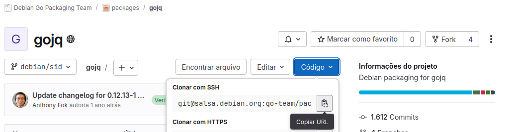
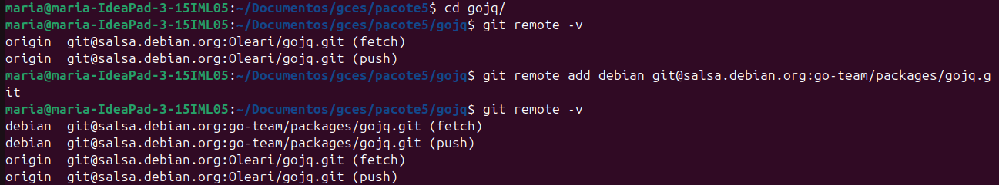
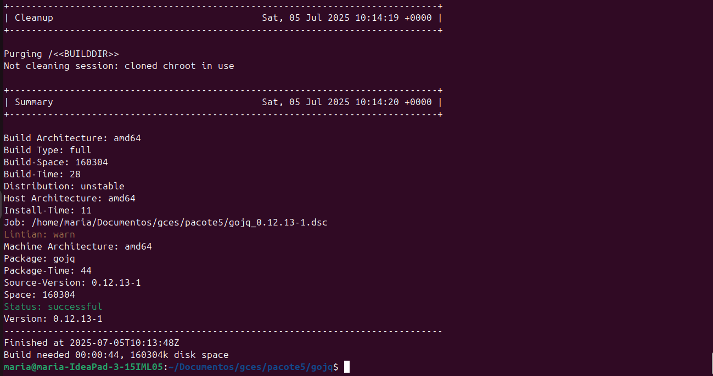
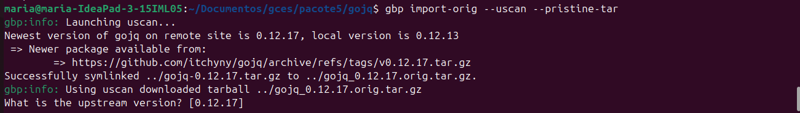
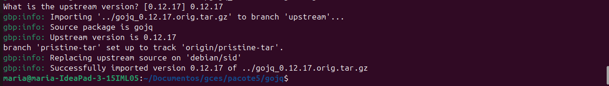
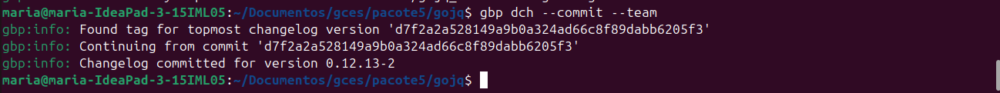
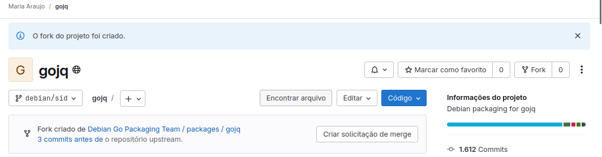
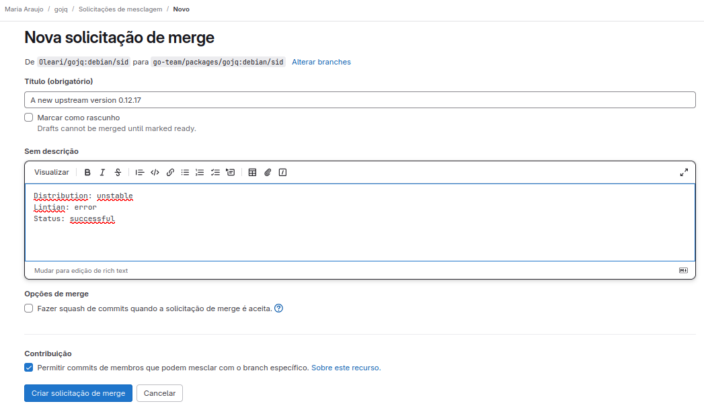
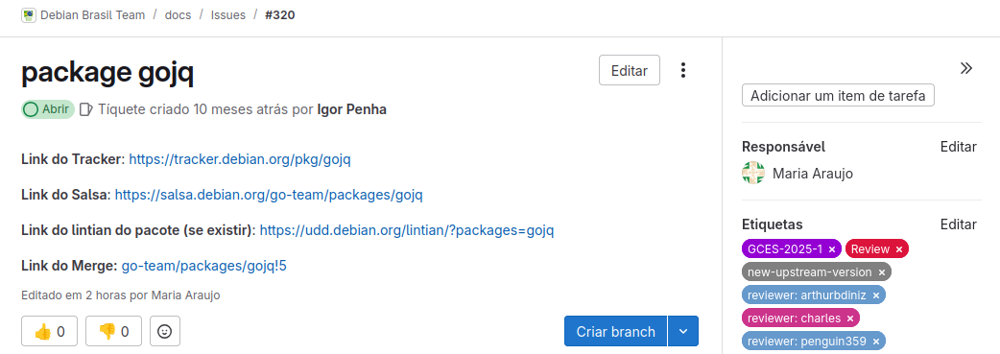

Tutorial de Atualização Upstream para Projeto Debian¶
Antes de continuar nesse tutorial, saiba que para fazer a sua primeira atualização upstream você deve ter criado e ter sua senha no salsa aceita e o ambiente de empacotamento configurado.
O que é Atualização Upstream?¶
Atualizar um pacote para uma nova versão upstream significa incorporar as mudanças feitas no código original do projeto pelo seu autor. Essa é uma das contribuições mais comuns no empacotamento Debian e ideal para quem está começando.
Pode ser uma tarefa simples (demorar poucos minutos) ou exigir análise aprofundada e trabalho em grupo, especialmente quando há mudanças estruturais ou problemas de build.
Passo 1: Atualizar o chroot¶
Execute antes de começar qualquer empacotamento (idealmente uma vez por semana ou antes de começar qualquer empacotamente):
sudo sh /usr/share/doc/sbuild/examples/sbuild-debian-developer-setup-update-all
Passo 2: Fazer o Fork¶
- Vá até o repositório oficial do pacote no Salsa.
- Clique em Fork (canto superior direito).
- Copie o link de clone via SSH.

No terminal:
# Clona o repositório
gbp clone [link-copiado]
# Entre na pasta do pacote
cd [nome_do_pacote]
# Visualize os repositórios remotos configurados no seu repositório Git local.
git remote -v
# Adicione o repositório oficial.
git remote add debian [link-repositorio-oficial-ssh]
git remote -v
As saídas esperadas devem ser parecidas com essa imagem: 
Passo 3: Buildar¶
gbp buildpackage
Se falhar, especifique a branch correta:
gbp buildpackage --git-debian-branch=[nome-da-branch]
Essa parte é a mais demorada do processo. Depois de alguns minutos, caso esteja tudo correto, o build será feito corretamente e terá no final uma saída assim:

Uma saída parecida com a da cima indica que está tudo certo.
Passo 4: Atualizar para nova versão upstream¶
# Atualizar o pacote
gbp import-orig --uscan --pristine-tar
A saída esperada é a seguinte:

Quando aparecer a pergunta
What is the upstream version?, digite o número da nova versão sugerida (ex:1.2.3), se estiver correto com o tracker.
A saída será algo do tipo:

Passo 5: Operações git¶
gbp dch --commit --team
Esse comando irá fazer o commit e inserir no documento debian/changelog que o empacotamento está sendo feito de forma Team Upload. Isso é necessário para o seu empacotamento, caso não esteja nesse documento, o seu build final poderá falhar.
Saída esperada: 
Depois, visualize os commits:
git log
Você irá visualizar toda a história dos commits feitos. É importante realizar esse passo pois na próxima etapa você irá precisar do hash do commit da branch upstream para fazer a revisão.
Passo 6: Revisão¶
Essa parte é essencial na atualização upstream. Você irá revisar as mudanças feitas e ficar atendo as modificações como: - Dependências novas e alteradas; - Mudanças de licenças; - Checagem geral para verificar as mudanças feitas. - Erro de Lintian
git show [hash-do-commit-upstream]
git diff
Caso tenha alguma modificação significativa, ela deve ser reportada. As mudanças podem resultar em diferentes cenários, por isso, na dúvida sempre entrar em contato com a sua equipe Debian. Feita a revisão podemos seguir em frente.
Passo 7: Finalizando¶
Abra o changelog para editar manualmente, pode usar seu editor de texto preferido, nesse caso foi usado o vim:
nvim debian/changelog
No
vim, digiteipara editar,Escpara sair,:wqpara salvar.
Uma dica importante é que você deve commitar os arquivos que editou separadamente. Por exemplo, se você precisou editar além do changelog, o arquivo watch, você fará um commit para o changelog e outro para o watch.
git add debian/changelog
git commit --amend
git add debian/watch
git commit --amend
Passo 8: Fazer o build final com as novas alterações¶
gbp buildpackage
Após esse passo muitos cenários diferentes podem acontecer, cabe ao empacotador analisar o que precisa ser feito a partir daqui. Sempre que tiver dúvida, entre em contato com alguém da equipe.
Ignore o erro do lintian "unreleased-changes", ele é esperado neste estágio.
Passo 9: Push e Merge¶
git push --all
git push --tags
Feito isso, entre no seu repositório fork, o salsa já irá reconhecer que houve mudanças e irá sugerir que seja feito um merge request, basta clicar em "Criar solicitação de merge". Então você irá no repositório oficial e seguir os passos que o próprio salsa pede para realizar o Merge.

É importante editar em inglês! O título deve ser representativo com as mudanças feita! Exemplo:
 Lembrete: geralmente o merge request ocorre direto para a master, porém, no debian também pode ocorrer da branch master ser nomeada como debian/sid, que é equivalente à master, então não se assuste você está no caminho certo!
Após isso inclua os links importantes, e as etiquetas adequadas. Exemplo: 
Passo 10: Revisão¶
Agora o seu pacote será revisado por algum DM do Debian. É só aguardar e ficar de olho nos comentários, pois o seu revisor poderá sugerir alterações.
⚠️ Nota: Este tutorial é um material introdutório criado por iniciantes. Pode conter simplificações ou omissões. Consulte sempre a documentação oficial ou membros experientes do time para dúvidas específicas.